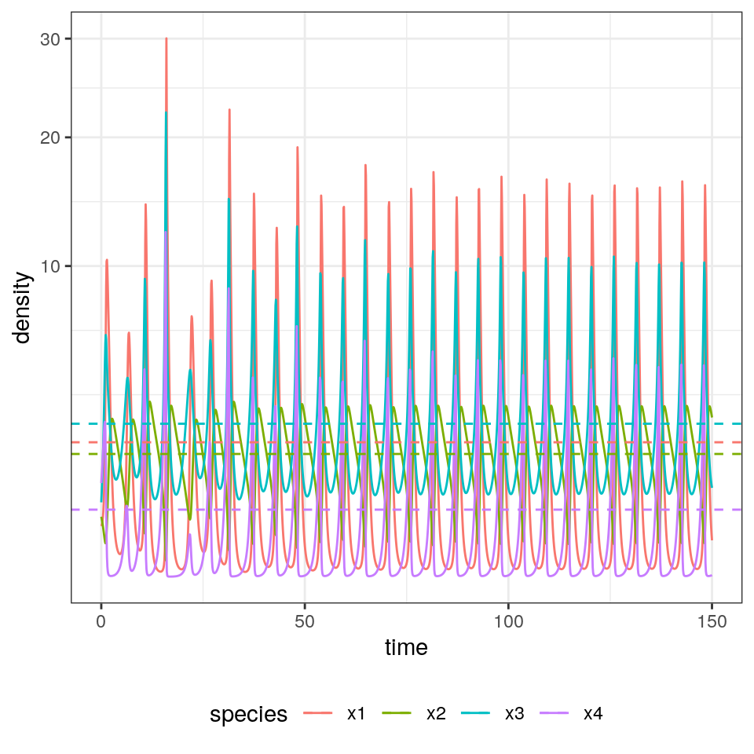

Lecture 1 Introduction
We call ecological assembly the process by which ecological communities are built by the interplay of invasions (increasing community “richness”) and extinctions (decreasing it). The typical setting for an assembly model is one in which a large (possibly infinite) pool of species are available (e.g., in a “mainland”), and every so often individuals from the species’ pool enter a local habitat (island, patch, etc.), at which point they might either grow (invasion, establishment, etc.), or go extinct. In either case, the local community might respond to the invader—for example, the invader could send some of the local populations extinct, or shift the community from one state to another.
Historically, this type of island-mainland models (based on species) have been contrasted with “trait-environment” models, in which species’ traits, rather than identity are the focus of the dynamics. In such models, ideas such as “environmental filtering” (i.e., the pruning of species that cannot grow in the local environment) and “trait underdispersion” (i.e., the fact that the filtering imposed by the environment results in a convergence in traits) arise naturally. When thinking of communities of competitors (e.g., different species of plants), then we might think that species’ interactions will also play a role—because species need to be different enough to coexist, this would generate “trait overdispersion” (due to limiting similarity). For a very opinionated summary of 25 years of discussions on these themes (1975-2000), see Weiher and Keddy (2001) (but first read the review Gotelli (1999), stating that the language and tone of the introduction is “an embarrassment to the discipline”).
The idea of assembly was first introduced in ecology by the pioneers of “succession”. For example, in 1899 Henry Chandler Cowles studied the vegetation development in the Indiana Dunes—sand dunes are first colonized by “pioneer” species of plants, which are then overgrown by different vegetation in older dunes. Because dunes are regularly disrupted by wind, one could make a “space-for-time” substitution and reconstruct the development of the vegetation as a “chronosequence”. Importantly, Cowles (and then Clements) held the view that succession would be a strongly ordered, “determinisitc” process by which communities tended to a certain “climax” state. In the 1920s, Henry Gleason challenged this view, advocating for a much greater role for chance.
Another important piece of the puzzle was provided by the work of Jared Diamond who, while studying avian assemblages in New Guinea, proposed that certain species assemblages would be “forbidden” (due to competition)—by observing several instances of assembly (in the different islands), one could guess the rules of the assembly game (Diamond (1975)). Diamond’s work sparked decades of intense debate, bringing a focus on the role of null models in ecology (are the observed patterns due to chance or necessity?), with especially cogent critiques brought forward by Simberloff, Connor and Gotelli (see for example Gotelli and Graves (1996)).
In the early 2000s, the focus changed decisively and became centered on the difference between “neutrality” (i.e., where species distribution are driven by stochastic fluctuations, Hubbell (2001)) and “niche” (i.e., driven by species interactions—or rather their avoidance).
Finally, the budding field of “community phylogenetics” (Cadotte and Davies (2016)) is centered on relating these concepts to data stemming from phylogenetic trees.
Here, we step back and reconsider basic models of ecological assembly in the style for example of Drake (1991), Law and Morton (1996), and Morton et al. (1996).
1.1 Generalized Lotka-Volterra model
For our explorations, we will use what is arguably the simplest model for the dynamics of an ecological community, the Generalized Lotka-Volterra model.
We can write the Generalized Lotka-Volterra model in a compact form as:
\[ \dfrac{dx(t)}{dt} = D(x(t))(r + A x(t)) \]
where \(x(t)\) is a (column) vector of length \(n\) containing the densities of all populations \(1, \ldots, n\) at time \(t\), \(r\) is a vector of “intrinsic growth rates” (or death rates, when negative), measuring the growth (decline) of population \(i\) when grown alone at low density, and \(A\) is a \(n \times n\) matrix of interaction coefficients. We use \(D(x)\) to denote the diagonal matrix with \(x\) on the diagonal.
For a single species, the model can yield only a limited number of outcomes—the species can grow exponentially, decay exponentially, or reach an equilibrium. When we include two or more species, we can observe cycles, and with three or more species we can find chaotic dynamics.
source("code/general_code.R")
# load interesting parameters
load("code/four_spp_cycle.RData")
A <- limit_cycle_4spp$A
r <- limit_cycle_4spp$r
set.seed(1) # for reproducibility
dynamics <- GLV_dynamics(A = A,
r = r,
maxtime = 150)
show(plot_dynamics(dynamics))
1.1.1 Coexistence equilibrium
For any instance of the model, we can look for stationary points (equilibria). If the matrix \(A\) is not singular, then we can look for a solution of \(r + Ax = 0\) that has positive components (called a feasible equilibrium). If such point exists, it is unique and is the solution of \(Ax^\star = -r\), \(x^\star = -A^{-1}r\).
[1] 1.8722239 1.5603128 2.4236325 0.4654487
Suppose that the GLV has no feasible equilibrium. Then all trajectories (if bounded; some could grow to infinity) reach the boundary of \(\mathbb R^n_{0+}\). Practically, this means that to ensure coexistence of all species, it is necessary to have an equilibrium in the interior \(\mathbb R^n_{+}\). For a proof, see Theorem 5.2.1 in Hofbauer and Sigmund (1998).
1.1.2 Local Stability of the coexistence equilibrium
Suppose that a feasible equilibrium \(x^\star\) exists. For the GLV model, the Jacobian is easy to compute:
\[ J_{ij} = \frac{\partial f_i}{\partial x_j} = A_{ij} x_i \]
and
\[ J_{ii} = \frac{\partial f_i}{\partial x_i} = r_i + \sum_j A_{ij} x_j + A_{ii} x_i \]
At equilibrium \(r_i + \sum_j A_{ij} x_j = 0\), and therefore:
\[ M = \left. {J} \right|_{ {x}^\star} = D(x^\star)A \]
If the eigenvalues of \(M\) have all negative real part, then \(x^\star\) is locally asymptotically stable.
# build the community matrix
x_star <- solve(A, -r)
M <- diag(x_star) %*% A
eigen(M, only.values = TRUE)$values %>%
round(2)[1] -2.40+0.00i 0.37+2.06i 0.37-2.06i -0.61+0.00i
1.1.3 The equilibrium is the time-average
Suppose that \(x(t)\) has a periodic orbit of period \(T\) (i.e., we assume \(x(0) = x(T)\)). Further, assume that the GLV has a feasible, interior equilibrium \(x^\star\). We want to calculate the average density for each species:
\[ \frac{1}{T} \int_0^T x(t) dt \]
First, we assume that \(x(t) > 0\) and write the dynamics of its logarithm:
\[ \dfrac{d \log(x_i(t))}{dt} = \dfrac{1}{x_i(t)}\dfrac{d x_i(t)}{dt} = r_i + \sum_j A_{ij} x_j(t) \]
In vector form:
\[ \dfrac{d \log x(t)}{d t} = r + A x(t) \]
Compute the average on both sides:
\[ \frac{1}{T}\int_0^T \frac{d \log(x(t))}{dt} dt= \frac{1}{T}\int_0^T \left(r + Ax \right) dt \]
yielding:
\[ \frac{1}{T}(\log(x(T)) - \log(x(0))) = 0 = r + A \left( \frac{1}{T} \int_0^T x(t) dt \right) \]
Note that the l.h.s. is zero because \(x(0) = x(T)\). Multiplying by the matrix inverse and rearranging:
\[ -A^{-1} r = x^\star = \frac{1}{T} \int_0^T x(t) dt \]
showing that the average density is in fact the equilibrium. With a similar argument, one can prove that if the trajectory stays in a compact space (i.e., in case of chaotic attractors), then long-time average is still \(x^\star\).
dynamics$ts %>%
filter(time > 50) %>%
group_by(species) %>%
summarize(density = mean(density)) %>%
select(density) %>% t() %>% as.numeric()[1] 1.8681154 1.5585202 2.4212556 0.4621904
[1] 1.8722239 1.5603128 2.4236325 0.4654487
1.1.4 Lyapunov diagonal stability and global stability
Suppose that there is a positive diagonal matrix \(C\) such that \(C A + A^T C\) is negative definite (i.e., has only negative eigenvalues; the eigenvalues are real because the matrix is symmetric). Then \(A\) is Lyapunov-diagonally stable. If this is the case, then \(A\) is stable, and any \(D A\) with \(D\) positive is also stable (called \(D-\)stability).
Further, suppose that the GLV system with parameters \(A\) and \(r\) has a feasible equilibrium point \(x^\star\). Then the function:
\[ V(x(t)) = 1^T C \left( x(t) -x^\star -x^\star \cdot \log (x(t) / x^\star)\right) \]
is a Lyapunov function for the GLV system. It is clear that \(V(x(t))\) is positive everywhere in the positive orthant besides at equilibrium. Then, we need to show that the function decreases along the trajectories of the system (Goh (1977)).
To prove this point, we start from \(r = -A x^\star\). Substituting, we can write the GLV system as \(dx(t)/dt = D(x)A(x - x^\star)\); similarly, we can write \(d \log x(t)/dt = A(x - x^\star)\). Taking the derivative of \(V\) with respect to time:
\[ \begin{aligned} \frac{d V(x(t))}{dt} &= 1^T C \left(\frac{d x(t)}{dt} - D(x^\star) \frac{d \log x(t)}{dt} \right)\\ &= 1^T C \left(D(x)(A (x - x^\star) - D(x^\star) A (x - x^\star) \right)\\ &= 1^T C \left(D(x - x^\star) A (x - x^\star) \right)\\ &= 1^T \left(D(x - x^\star) C A (x - x^\star) \right)\\ &= (x - x^\star)^T CA (x - x^\star)\\ &= \frac{1}{2}(x - x^\star)^T (CA + A^T C) (x - x^\star)\\ \end{aligned} \]
A matrix \(B\) is negative definite if \(y^T B y < 0\) for all \(y \neq 0\). As such, if \(C A + A^T C\), then \(\frac{d V(x(t))}{dt} \leq 0\), i.e., will decrease in time (starting from any positive \(x(0)\)) until the equilibrium \(x^\star\) is reached.
The results above show that if \(A\) is Lyapunov diagonally-stable and a feasible equilibrium \(x^\star\) exists, then all trajectories starting at a positive density will converge to the equilibrium. This property is often used to prove global stability.
1.2 What makes the study of assembly difficult?
There are three main complications that stand in the way of the development of simple theories for ecological assembly (taken from Serván and Allesina (2020)):
Invasion rates. We have a timescale for the local dynamics, and a timescale for invasions, and the time at which the first species goes extinct after an invasion influences the effect of subsequent invasions. The simplest way to think of this is to have a “rock-paper-scissors” community. Suppose that our island contains only “rock”, and that “paper” enters the system—if we wait for long enough, it will displace rock; if before rock goes extinct, “scissors” invades, we can recover the full three-species community; if instead scissors arrives when rock is extinct, then it will displace paper.
As such, if the speed at which the dynamics of the local community proceed are slow enough compared to the rate of invasion, we have that several species can invade before the community has reached its asymptotic configuration. At the extreme where local dynamics are fast compared to the rate of invasion, we have that each invader finds the local community at its asymptotic state; as the invasion rate increases, the system approaches a point where all the species enter the system before any extinction takes place. Increasing the invasion rate even further would result in an open system with constant immigration.
Invasion size. Consider the two-species competitive Lotka-Volterra model with preemptive competition, and suppose that initially we have species \(x_1\) resting at its carrying capacity, i.e., the state of the system is \(\{x_1\}\). If \(x_2\) invades with sufficiently low density, we find \(\{x_1, x_2\} \to \{x_1\}\); on the other hand, if \(x_2\) has sufficiently high density, we can cross the separatrix in the phase plane, leading to \(\{x_1, x_2\} \to \{x_2\}\). This simple example shows that the density at which the invader enters the system can alter the outcome of the dynamics.
Invasion timing. When the local community coexists at a non-fixed point attractor, the fate of the invader could be very different depending on when it is introduced. For example, a predator requiring its prey to be above a certain level would not be able to invade an oscillating system whenever prey are at low abundance, but would start growing if the invasion happened at a time when prey were abundant.
1.3 Ecological assembly without tears
We make three main assumptions, which remove the difficulties above while leaving the model interesting to study:
Invasion events are rare. We assume that the invasion rate is low enough such that, after an invasion, the local community has sufficient time to reach its asymptotic configuration before the next invader arrives. In other words, we consider cases in which local dynamics operates at a much faster rate than invasions. Note that this choice precludes certain dynamics; for example, under these stringent conditions the rock-paper-scissors community described above would never reach the three-species configuration. While this is a strong requirement, it corresponds to assumptions routinely made in the study of population genetics, and in invasion analysis.
Invaders arrive at low abundance. We assume that the density of the invader is low enough so that intraspecific effects are negligible at the time of invasion (again, as routinely assumed in invasion analysis). Under this assumption, the assembly of the Lotka-Volterra preemptive competition model would have two possible final states, corresponding to each species in isolation. Note also that whenever the invader can enter the system only at low abundance, the local stability of an attractor (i.e. the community at the attractor is resistant to small perturbations caused by changes in abundance of any of the species in the pool) is sufficient to make it a possible outcome of the assembly process.
Fixed-point dynamics. Finally, we consider models in which the asymptotic state of the local community is a feasible, stable equilibrium, thereby sidestepping the difficulty stemming from the timing of invasion.
For example, the Generalized Lotka-Volterra model with a symmetric matrix of interaction \(A\) yields only fixed-point dynamics.
1.4 Top-down and bottom-up assembly
We distinguish between two extreme cases of assembly. In top-down assembly, all species enter the system (at arbitrary densities) at the same time; assembly then is simply the pruning of some of the species through the dynamics. At the other extreme, we find bottom-up assembly, in which species enter the system one at a time. Our second lecture will focus on top-down assembly, and the third on bottom-up assembly.
1.5 Modeling invasions
Imagine starting with a bare environment, and introducing the first species. If the species can grow in the new environment, it will establish, and if not, it will go extinct. Mathematically, we assume that new species are introduced at very low abundance, so that they do not experience self-limitation due to crowding, and that invasion are spaced in time so that the dynamics can play out before the next invasion happens. For example, consider the GLV model, and the case of the first species entering the system, and write the equation for the per-capita growth rate:
\[ \dfrac{1}{x_i(t)}\dfrac{dx_i(t)}{dt} = r_i + A_{ii} x_i(t) \]
If \(x_i(0) \ll 1\), we can set \(A_{ii} x_i(0) \approx 0\), obtaining
\[ \dfrac{1}{x_i(t)}\dfrac{dx_i(t)}{dt} \approx r_i \]
That is, the species will establish if it has a positive growth rate in the new environment. Suppose that this is the case: then species \(i\) will grow to its equilibrium abundance \(x_i^\star = -r_i / A_{ii}\). Now add a second species. Its initial per-capita growth rate is going to be:
\[ \dfrac{1}{x_j(t)}\dfrac{dx_j(t)}{dt} = r_j + \sum_k A_{jk} x_k(t) \approx r_j + A_{ji}x_i^\star \]
Species \(j\) can therefore grow when rare if \(r_j + A_{ji}x_i^\star > 0\), i.e., \(r_j > -A_{ji}x_i^\star\). We call this type of inequality an “invasion criterion”.
If the species \(j\) can grow when rare, in general, it could a) grow initially, but then go extinct; b) displace species \(i\), sending it to extinction; c) coexist with species \(i\). By reiterating invasions with different species, we can assemble a large ecological community.
1.6 Invasions in multispecies communities
Now consider a pool of species (e.g., a metacommunity/mainland) and an environment (e.g., a local habitat/island) in which some of the species are present, and coexisting at an equilibrium. We have \(n\) species in the pool, and \(k\) species in the habitat/island. We want to write conditions for the invasibility of the equilibrium. To this end, we can re-arrange the rows and columns of \(A\), and the elements of \(r\) to obtain two blocks: one for the \(k\) species already in the community, and one for the \(n-k\) potential invaders.
The fixed point \(\bar{x}\) can be written as:
\[ \bar{x} = \left(\begin{array}{l} x^{(k)} \\ 0^{(n-k)} \end{array} \right) \]
where \(x^{(k)}\) contains the density of the coexisting species. Similarly, the growth rates are
\[ r = \left(\begin{array}{l} r^{(k)} \\ r^{(n-k)} \end{array} \right) \]
and the interaction matrix
\[ A = \begin{pmatrix} A^{(k,k)} & A^{(k, n- k)}\\ A^{(n-k,k)} & A^{(n-k, n- k)}\\ \end{pmatrix} \]
where each block \(A^{(a,b)}\) contains the effects of the species in set \(b\) on the growth of the species in \(a\). For feasibility we need:
\[ x^{(k)} = -\left(A^{(k,k)} \right)^{-1}r^{(k)} > 0 \]
Now we want to write the condition for the non-invasibility of the resident community by the other species in the metacommunity. For each species in \((n-k)\), we need to have a negative growth rate when invading:
\[ r^{(n-k)} + A^{(n-k,k)}x^{(k)} < 0 \]
an equilibrium \(\bar{x}\) for which a) the \(x^{(k)}\) is feasible and stable (when considering only the species in \(k\)) and b) no other species can invade when rare is called the feasible, stable, non-invasible solution or the saturated equilibrium.
1.7 Lyapunov stability and saturated equilibria
We have seen in previous section that, whenever there exists a matrix \(C\) such that \(CA + A^T C\) is negative definite and we have a feasible equilibrium \(x^\star\) then the equilibrium is globally stable. Now we consider the case in which a feasible equilibrium does not exist. However, we can prove that a saturated equilibrium exists and is unique: we have an equilibrium \(\bar{x}\) in which some components are positive and some are zero such that \(k\) species coexist at a globally stable equilibrium, and the remaining \((n-k)\) species cannot invade it.
Following Hofbauer and Sigmund (1998) (section 15.3), we write:
\[ V(x) = -\sum_i c_i (\bar{x}_i \log x_i - x_i) \]
yielding:
\[ \begin{aligned} \dfrac{dV(x)}{dt} &= -\sum_i c_i \left(\bar{x}_i \frac{d \log x_i}{dt} - \frac{d x_i}{dt} \right) \\ &= -\sum_i c_i \left( \bar{x}_i - x_i \right) \left( r_i + \sum_j A_{ij} x_j \right) \\ &= -\sum_i c_i \left( \bar{x}_i - x_i \right) \left( r_i + \sum_j A_{ij} (x_j - \bar{x}_j) + \sum_j A_{ij} \bar{x}_j \right) \\ &= \sum_{i,j} \left( \bar{x}_i - x_i \right) c_i A_{ij} \left( \bar{x}_j - x_j \right) + \sum_i c_i \left( \bar{x}_i - x_i \right) \left(r_i + \sum_j A_{ij} \bar{x}_j \right) \end{aligned} \]
The first term is negative for all \(x \neq \bar{x}\), and is zero at the saturated equilibrium point. The second term is zero for all \(\bar{x}_i > 0\): \(r_i + \sum_j A_{ij} \bar{x}_j = 0\), given that \(\bar{x}\) is an equilibrium for the species at positive density; for the remaining species (for which \(\bar{x}_i = 0\)), this amounts to the invasion criterion above, and must therefore be negative. As such \(V(x)\) is a Lyapunov function for the system, assuming negative values everywhere but at \(\bar{x}\).
References and readings
Cadotte, Marc W, and T Jonathan Davies. 2016. Phylogenies in Ecology: A Guide to Concepts and Methods. Princeton University Press.
Diamond, Jared M. 1975. “Assembly of Species Communities.” Ecology and Evolution of Communities, 342–444.
Drake, James A. 1991. “Community-Assembly Mechanics and the Structure of an Experimental Species Ensemble.” The American Naturalist 137 (1): 1–26.
Goh, Bo S. 1977. “Global Stability in Many-Species Systems.” The American Naturalist 111 (977): 135–43.
Gotelli, Nicholas J. 1999. “How Do Communities Come Together?” Science 286 (5445): 1684–5.
Gotelli, Nicholas J, and Gary R Graves. 1996. Null Models in Ecology.
Hofbauer, Josef, and Karl Sigmund. 1998. Evolutionary Games and Population Dynamics. Cambridge University Press.
Hubbell, Stephen P. 2001. The Unified Neutral Theory of Biodiversity and Biogeography. Vol. 32. Princeton University Press.
Law, Richard, and R Daniel Morton. 1996. “Permanence and the Assembly of Ecological Communities.” Ecology 77 (3): 762–75.
Morton, R Daniel, Richard Law, Stuart L Pimm, and James A Drake. 1996. “On Models for Assembling Ecological Communities.” Oikos, 493–99.
Serván, Carlos A, and Stefano Allesina. 2020. “Tractable Models of Ecological Assembly.” bioRxiv.
Weiher, Evan, and Paul Keddy. 2001. Ecological Assembly Rules: Perspectives, Advances, Retreats. Cambridge University Press.